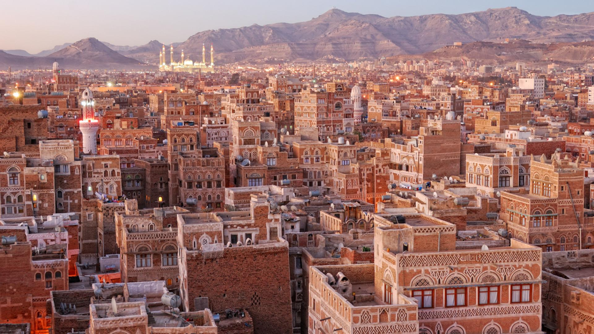
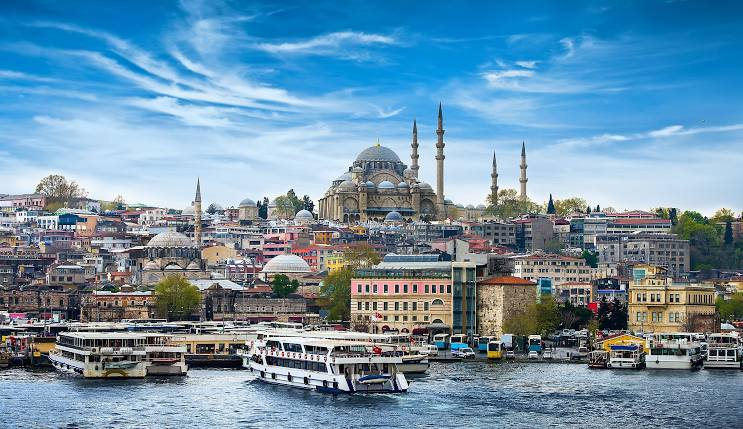
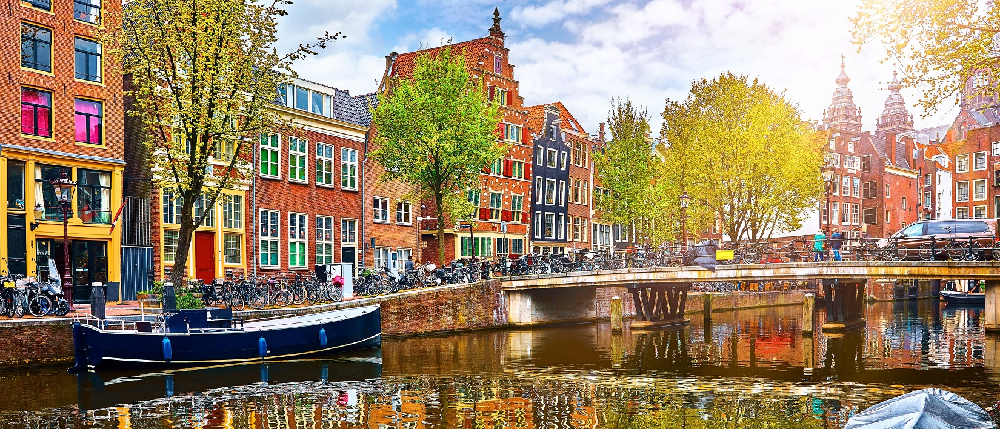
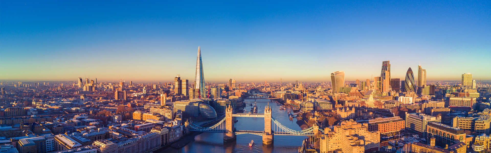

Countries I would like to visit in the future:
- USA
- Mexico
- Russia
🌄 Yemen
Yemen is known for its ancient cities like Sana'a and Shibam, with unique architecture and a rich historical heritage.
Yemen is a hidden gem located in the southern part of the Arabian Peninsula, surrounded by the Red Sea, the Gulf of Aden, and the Arabian Sea. With over 2,000 kilometers of pristine coastline, Yemen offers stunning beaches, untouched diving spots, and breathtaking views of the sea — making it an ideal destination for eco-tourism and coastal adventures. Its historical capital, Sana'a, is one of the oldest continuously inhabited cities in the world, known for its iconic tower houses built with unique Yemeni architecture and adorned with intricate gypsum patterns. Yemen has long been a crossroads of civilizations for over 7,000 years, home to the legendary Sabaean Kingdom, whose legacy can still be explored through ancient temples and ruins such as Marib Dam and the Temple of the Moon God. The country boasts some of the most authentic cultural experiences in the region — from traditional souks filled with handmade crafts and spices, to the warm hospitality of its people. Perhaps the most striking treasure of Yemen is the island of Socotra, a UNESCO World Heritage Site known as the "Galápagos of the Indian Ocean" for its alien-like dragon blood trees, rare bird species, and untouched biodiversity. Nature lovers, photographers, and adventure seekers alike will find Socotra a paradise like no other. Whether you are drawn to its rich history, exotic nature, or vibrant culture, Yemen promises a truly unique and unforgettable travel experience, far from mainstream tourist paths — a place where ancient history meets raw natural beauty.
🌉 Turkey
Turkey is famous for its stunning landscapes, from the sun-kissed beaches of the Aegean to the rugged beauty of Cappadocia's fairy chimneys. With a rich cultural heritage, Turkey bridges East and West through its diverse history and vibrant cities like Istanbul. The country's culinary delights, including kebabs and baklava, are world-renowned. Turkey's ancient ruins, such as those in Ephesus, offer a window into its past as a cradle of civilization. Whether you’re exploring bustling markets or relaxing by the Mediterranean, Turkey offers a unique blend of adventure and tranquility.
🏜️ Egypt

Egypt is one of the world's oldest civilizations, with monumental structures like the Pyramids of Giza and the Great Sphinx standing as symbols of ancient glory. The Nile River has been Egypt's lifeblood for thousands of years, nourishing the land and inspiring countless stories. In Cairo, visitors can explore the Egyptian Museum, home to artifacts like the treasures of Tutankhamun. Egypt's Red Sea coast, with resorts like Sharm El Sheikh, offers vibrant coral reefs and world-class diving. Its ancient temples in Luxor and Karnak reveal the grandeur of the Pharaohs.
🏛️ Greece

Greece, known for its islands and crystal-clear waters, is a destination rich in history and culture. Athens, the cradle of democracy, houses the Parthenon, a symbol of classical Greek civilization. Greek islands like Santorini and Mykonos are famous for their breathtaking views, whitewashed houses, and lively atmosphere. The country is also known for its delectable cuisine, from moussaka to feta cheese. Greece’s history, dating back thousands of years, is alive in the ruins of ancient temples, theaters, and Olympic sites, offering a glimpse into its glorious past.
🌷 Holland
Holland is a land of picturesque canals, vibrant tulip fields, and historic windmills. Amsterdam, the country’s capital, is known for its museums, such as the Van Gogh Museum and Rijksmuseum, which house masterpieces of art and history. The countryside is dotted with charming villages and colorful flower fields that attract visitors year-round. Holland's cycling culture is world-famous, offering a unique way to explore the countryside. In addition to its natural beauty, Holland’s rich cultural heritage is reflected in its art, architecture, and traditions that have shaped global history.
🎡 UK
The UK is a mix of modern cities and ancient landmarks. London, with its iconic landmarks like Big Ben, Buckingham Palace, and the Tower of London, draws millions of visitors each year. The country is steeped in royal history, with castles and palaces offering a glimpse into Britain’s past. The English countryside, with its rolling hills and charming villages, provides a tranquil retreat from urban life. British culture has had a profound influence on literature, music, and cinema, from Shakespeare to the Beatles. Whether you’re exploring the Highlands of Scotland or the historic streets of Bath, the UK offers a wealth of experiences.